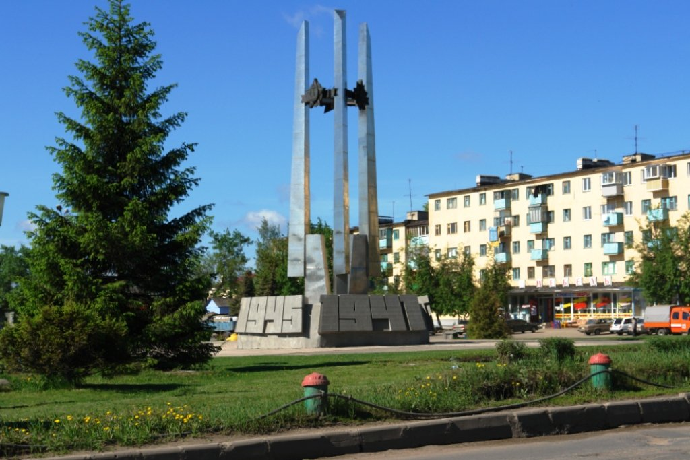
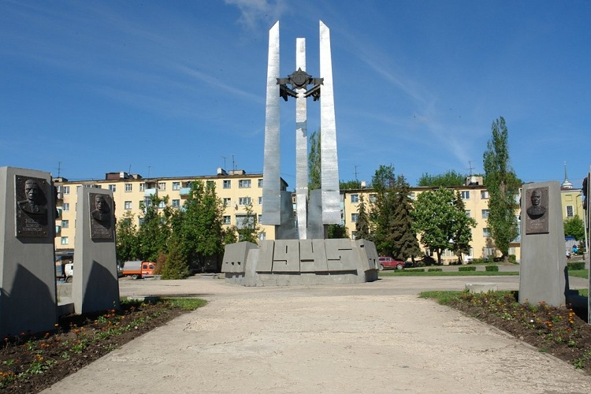

Места нашей области, посвящённые Великой Победе
 Домой
Домой
Площадь Победы (Елец)
Мемориальный комплекс посвящен ельчанам-участникам Великой Отечественной войны 1941-1945 гг. Открыт 8 мая 1985 года в городе Ельце в честь 40-летия Великой Победы. Он украшает площадь Победы и является ее символом. Мемориальный комплекс включает в себя: памятник, аллею героев, памятную доску с фрагментом знаменитой надписи «Мы из Ельца».
Памятник установлен в 1985 году в честь 40-летия Победы советского народа в Великой Отечественной войне. Представляет собой пятиугольный бетонный постамент высотой 1,5 метра и диаметром 8 метров. На каждой из сторон постамента изображены даты огненных лет войны. От постамента ввысь устремились три 12-метровых символических штыка, облицованные нержавеющей сталью – олицетворение победоносного оружия нашей армии. Верхняя часть композиции увенчана кольцом с полутораметровыми изображениями орденов Славы, Победы и Отечественной войны. Рядом с обелиском на двух стелах показана схема Елецкой наступательной операции и перечислены части Советской Армии, принимавшие в ней участие. Авторы памятника: известные елецкие архитекторы Александр Александрович Шашин и Александр Васильевич Новосельцев.
Изображения:
 